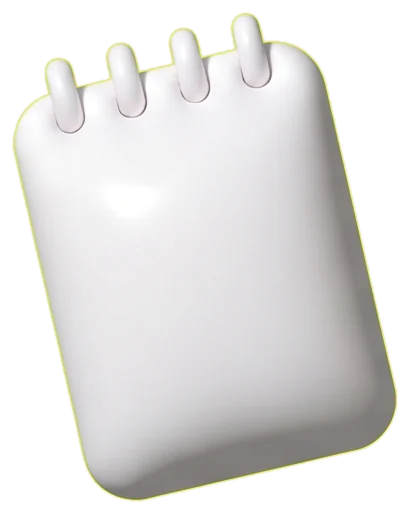
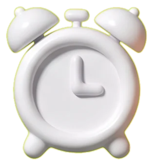
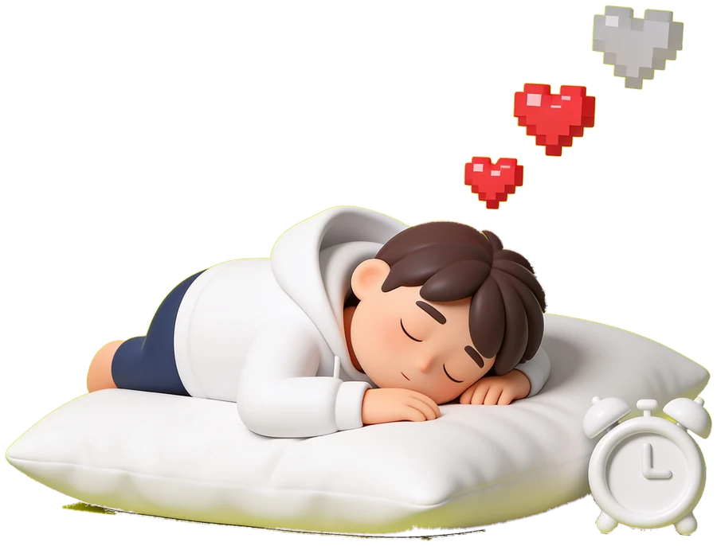
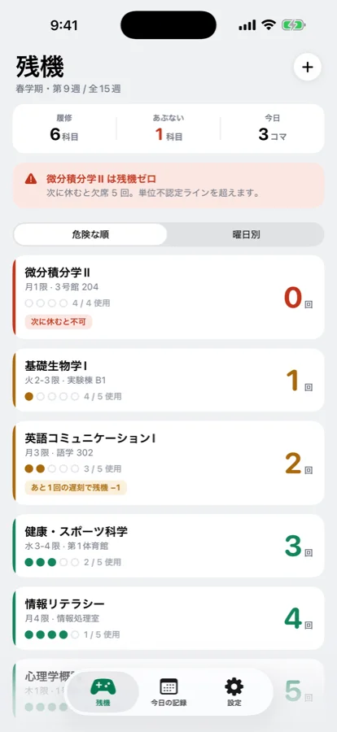
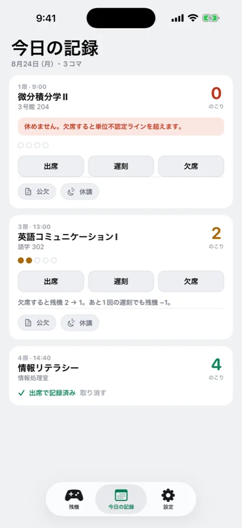
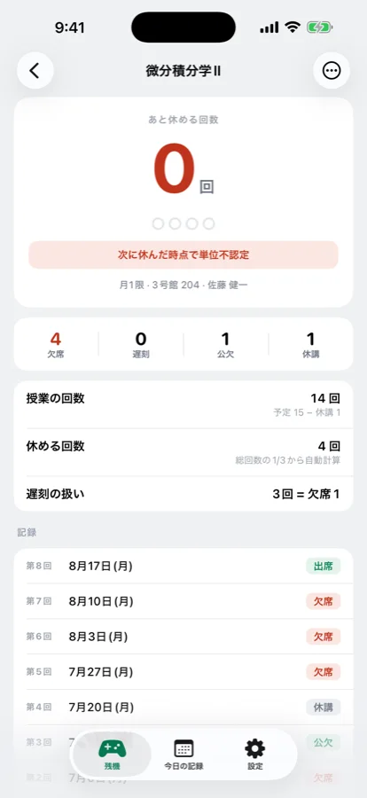
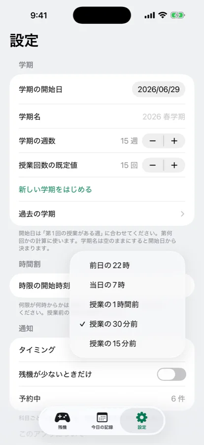
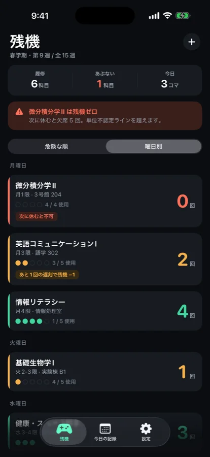

英語コミュニケーション I
回
あと1回の遅刻で残機 −1
残機は、履修科目ごとに「あと何回休めるか」だけを数える iPhone アプリ。 シラバスの「欠席は何回まで」を入れたら、あとは授業のたびに1タップ。
アカウント不要 ／ 記録は端末の中だけ ／ オフラインで動く


ハートを押すと、欠席1回。
開いた瞬間、いちばん危ない科目が一番上に。

1限、あと何回いける…？
微積は残機ゼロです。
アプリの「今日の記録」と同じ計算で動きます。出席・遅刻・欠席に加えて、公欠と休講も押してみてください。
あと1回の遅刻で残機 −1
欠席すると 残機 2 → 1
残機を大きな数字とドットで表示。少ない科目から上に来るので、開いた瞬間どれがまずいか分かります。曜日別の並べ替えも。

「今日の記録」には今日ある授業だけ。出席・遅刻・欠席の3ボタンで終わり。

日本の大学の運用にそのまま合わせました。海外製の出席アプリにはない区別です。
文面は残機の数で変わります。少ない科目だけ通知する設定も。

「遅刻3回で欠席1回」を科目ごとに。あと何回で減るかも出ます。
新学期をはじめると前の科目はアーカイブへ。通年科目はそのまま引き継げます。
1限〜6限の開始時刻を手で設定。2コマ続きの授業もそのまま登録できます。



時間割も、課題管理も、GPA計算も入れていません。曜日と時限は「今日の授業」を出すためと、通知のためにしか使いません。
そのぶん、開いて1秒で「今日は休んでも大丈夫か」が分かります。
初期値は「総回数 ÷ 3（切り捨て）」です。15回の授業なら5回。シラバスで別の回数が決まっている科目は、科目ごとに上書きできます。
公欠は記録には残りますが、残機は減りません。休講はその回がなかったことになるので、総回数から引いて欠席できる上限も計算し直します。
科目ごとに曜日と時限を入れるだけです。それは「今日の記録」に今日の授業を出すためと、通知のためにだけ使います。時間割表の画面はありません。
記録はすべて端末の中にだけ保存しています。クラウド同期やログインはないので、iPhone のバックアップから復元する形になります。
いいえ。ゲームの「あと何機」になぞらえた名前の、出席管理アプリです。